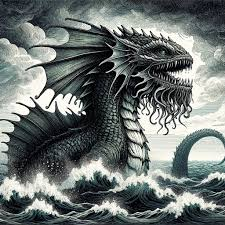
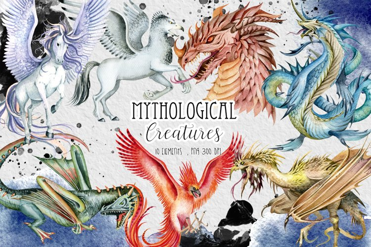
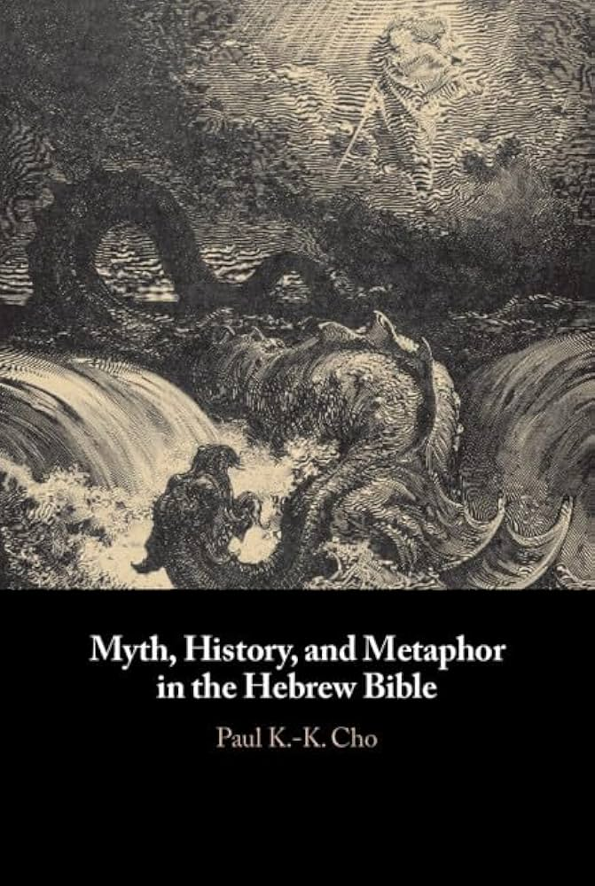
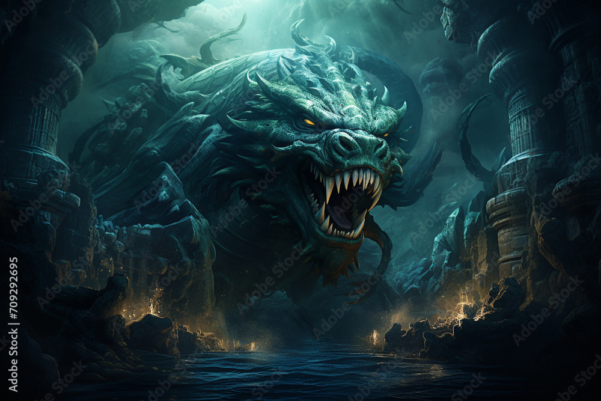
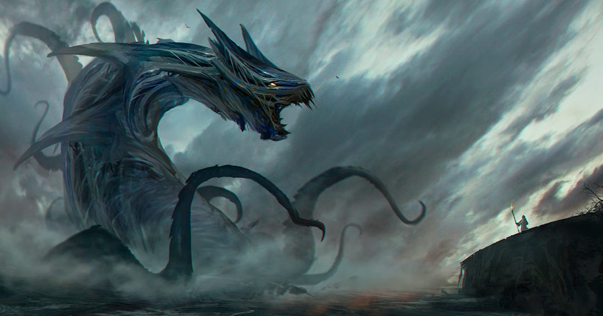
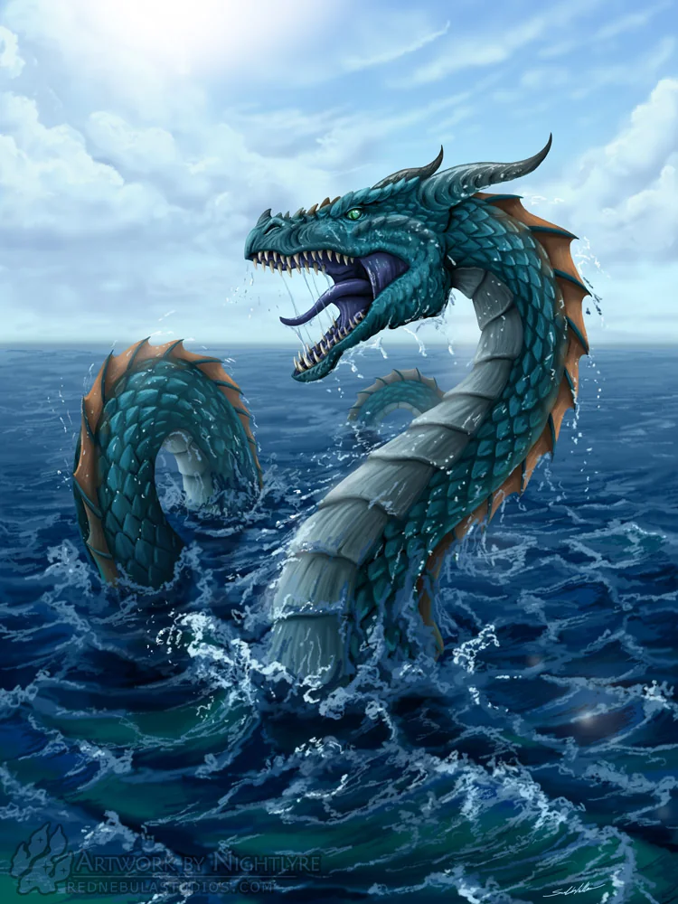

About Leviathan
The Leviathan is one of the most famous sea monsters in mythology, known for its terrifying size, immense strength, and association with chaos. Rooted in ancient texts, particularly the Hebrew Bible, the Leviathan is often portrayed as a giant sea serpent or dragon, representing the untamable and destructive forces of nature. In religious and literary traditions, the creature symbolizes chaos, disorder, and divine judgment. Over time, the Leviathan has evolved from a mythological figure into a powerful symbol, appearing in various religious, philosophical, and popular cultural references. Its enduring legacy as a fearsome sea monster reflects humanity's fascination with the mysteries of the ocean and the unknown depths of the world.
Mythologies
The concept of the Leviathan likely draws from even older mythologies, particularly from the ancient Near East. In Mesopotamian myth, there were primordial sea monsters like Tiamat, a chaotic sea dragon who represented the untamed waters. The battle between the storm god Marduk and Tiamat is a myth of order overcoming chaos, a motif that is mirrored in later stories of the Leviathan.
Christian Hebrew Bible

- The Leviathan is prominently featured in the Hebrew Bible, where it is described as a massive sea creature, often associated with chaos and disorder. In the Book of Job (Job 41:1-34), God describes the Leviathan as an awe-inspiring, untamable beast, a symbol of God’s power over creation. The Leviathan is often depicted as a sea serpent or dragon, a creature that no human can subdue, representing the uncontrollable forces of nature.
- In Psalm 74:14, Leviathan appears as a multi-headed sea creature that God slays, symbolizing divine power over chaos: "You crushed the heads of Leviathan; you gave him as food for the creatures of the desert." Similarly, Isaiah 27:1 describes the destruction of the Leviathan during the final judgment: "In that day, the Lord will punish with his sword—his fierce, great and powerful sword—Leviathan the gliding serpent, Leviathan the coiling serpent; he will slay the monster of the sea."
- Leviathan also found its way into Christian theology, particularly in medieval interpretations of Biblical texts. Many Christians saw the Leviathan as a symbol of Satan or the forces of evil, especially given its association with chaos and destruction. In the Christian eschatological framework, the eventual defeat of Leviathan by God can be seen as part of the final triumph over evil.
- In medieval Christian iconography, Leviathan was often depicted as a dragon or serpent-like figure. The Book of Revelation, although not mentioning the Leviathan directly, draws on the imagery of sea monsters and dragons to represent evil forces that God will ultimately destroy in the end times.
Scientific
Some scholars believe that the legend of the Leviathan may have been inspired by actual sea creatures encountered by ancient sailors. It is possible that large animals like crocodiles, whales, or giant squids were the basis for Leviathan myths, particularly in the minds of people who did not have the scientific understanding to explain such creatures. Ancient depictions of sea monsters often blended reality and myth, leading to legends of enormous, terrifying beings like the Leviathan.
Jewish Tradition

- In Jewish eschatology, the Leviathan is a significant figure in future events. Rabbinic literature expands on the role of the Leviathan in the end times. It is said that in the Messianic Age, the righteous will feast on the flesh of the Leviathan after God slays the creature. This cosmic battle between God and Leviathan is a symbolic representation of the ultimate defeat of chaos and evil.
- In The Talmud, the Leviathan is described as a pair of sea monsters, one male and one female. According to legend, God killed the female Leviathan to prevent them from reproducing and consuming the world. The male Leviathan was left alive until the end of time.
Conclusion
The Leviathan is a complex symbol in human history, representing different aspects of chaos, divine power, and the natural world. From its Mesopotamian origins to its role in Jewish and Christian traditions, the Leviathan has been portrayed as a fearsome sea monster, an embodiment of chaos that must be subdued by divine forces. Its legacy continues in modern philosophy and popular culture, serving as a powerful metaphor for uncontrollable power and the mysteries of the deep sea.